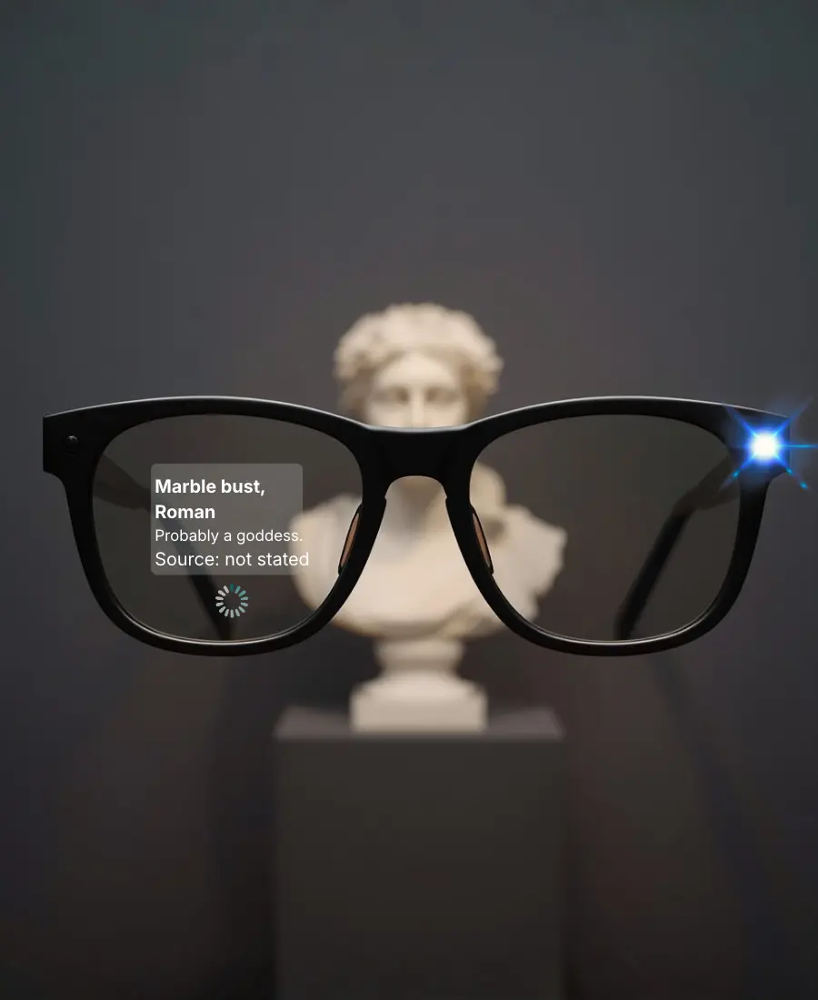

Nubart GUIDE AI: your museum's voice at every exhibit
AI narration for your whole collection, based only on the sources your museum approves.
Founding partner programme for museums with a large collection that their current guide covers only in part, or that have no guide yet. Places are limited.
Apply as a founding partnerAlready using Nubart GUIDE? The AI layer is added to your current guide and cards. Your existing tracks stay as they are.
Curators spend months on an exhibition: researching the objects, finding the links between them, building a point of view. Then a visitor points a phone at an object, or soon simply looks at it through smart glasses, and a general AI app answers with a summary from the open internet. It is often generic, sometimes wrong, and it never tells the story your curators built.
Nubart GUIDE AI puts your museum's own knowledge on that phone. The visitor points the camera at an object and hears a short narration, based only on the sources you approve: your catalogues, articles, room texts and scripts. If a detail is not in your sources, the guide does not invent it.
And it works for the whole collection, not only the highlights a classic audio guide can afford to cover. Visitors can ask about any object, which gives them a reason to use the guide from the first room to the last. Because the narration is built from material you already have, covering hundreds of objects no longer means hundreds of scripted and recorded tracks.
Nubart GUIDE AI is an extension of Nubart GUIDE, the QR-code audio guide used by around 200 institutions in 28 countries.

Where the words come from: only your approved sources
You upload your material as it is: exhibition catalogues, academic articles, room texts and existing scripts, in Word, PowerPoint, Excel or as scanned documents. There is no need to sort it or to assign texts to objects. The only structured input we need is your object list, with name or inventory number, image, and room if you have it.
For each object, the system searches all of your sources for the passages that concern it and keeps a reference to where each passage came from. The catalogue is the main source, and selected academic texts add background. The narration is written strictly from those passages. If your sources say nothing about a detail, the guide tells the visitor that this information is not available.
Before any source is used, your museum confirms that it holds the rights for this use. For catalogue essays by external authors, this may need the authors' agreement. If you wish, the guide can name the author of each source. Images are a separate question: catalogue images appear in visitors' collections only where your image rights allow it. Your material is used only for your guide, and never to train AI models.
Visual placeholder
Example of a catalogue passage next to the narration written from it
Curators stay in control of every text
Each narration is written once, for each object, language and style, and then kept. Every visitor hears the same version until your team changes it, so it can be read, checked and corrected like any page of a printed guide. Before a text is kept, it is checked automatically against your sources, in every language. This also means the same text is not generated again for hundreds of visitors a day, which keeps computing, and the energy it uses, to a minimum.
Your curators and education team work in the Nubart customer portal, where you already see usage statistics and visitor feedback. A new curator view lets you read any narration at any time. If you edit a text, visitors hear your version from then on. If you remove a text, a new one is written from your sources the next time a visitor asks for that object. If an error comes from a source itself, update the source in the portal: every text that depends on it is marked and written again from the corrected version.
You can have selected objects prepared in advance and read their texts before visitors hear them, for example sensitive objects. You don't have to. The guide works only from your sources and says when they are silent, so it does not depend on a review of every single text.
The curator view also shows which objects visitors scan most, which they rarely scan, and where your sources had no answer, so you can see the gaps in your documentation. Each card has a limit that stops automated copying of your content. It is set well above anything a real visit needs.
Visual placeholder
Curator view with a narration text, edit and remove buttons
If you already have an audio guide, it stays as it is
Many museums already have a carefully produced audio guide for their highlights. Nubart GUIDE AI does not touch it. Your human-made tracks stay exactly as they are. The AI layer covers the other objects, and the languages your human-made guide does not offer. AI narration is clearly labelled, so visitors always know which of the two they are listening to.
If your museum has no audio guide yet, Nubart GUIDE AI can cover the whole collection on its own, and you can add human-made tracks for selected highlights later.
What a visit with Nubart GUIDE AI looks like
The visitor opens the guide with their Nubart card, on their own phone. To hear about an object, they point the camera at it, or at its label, and the guide plays a short narration with the text on screen. The text also makes the guide usable for visitors who cannot listen. The browser asks for permission to use the camera. Visitors do not need an app or an account, and they never have to share their location.
At the start of the visit, visitors can choose a style: for children, short highlights, or more depth. Visitors without background knowledge get plain language, and experts get the detail they came for. All three styles are based on the same approved sources. Adding a language means preparing a pronunciation list for it, not writing and recording the collection again.
To recognise an object, the guide first compares the camera image with the objects likely to be near the visitor, for example in the room of the last object they scanned. It can also read an object's label or inventory number, and very small objects such as coins can carry a discreet marker. When the guide is not sure, it shows a few likely objects and asks the visitor which one they mean. How these methods perform with glass cases, reflections and similar objects side by side is what we will test on site with our founding partners.
- Camera on object
- Narration with text
- Object added to the visitor's collection
Each visitor builds their own collection
Every object a visitor discovers is added to their personal collection, linked to their Nubart card: the audio, the text and, where your image rights allow, the catalogue image. The card is non-transferable but reusable without limit, so visitors can listen again at home, with no account or password.
A large museum is rarely seen in one visit. The collection shows visitors what they have already discovered, and the rooms they missed can be a reason to come back.
If you correct or remove a text, it changes in every personal collection that holds it.
Visual placeholder
Mockup of a visitor's personal collection
Correct pronunciation without listening to every track
Wrong pronunciation of names is the most common complaint about synthetic voices. Nubart GUIDE AI starts from the pronunciation corrections we have already made in years of audio guide production, and keeps a list for each museum. The system collects names and foreign terms from your sources and proposes how each should sound in each guide language. Our team listens and confirms, and you approve the list once. An automatic check compares the finished audio with the text and flags names that seem to have come out wrong, so many problems are caught before a visitor hears them. When an entry is corrected, every track with that name is produced again.
Built on years of experience with museums and with AI
Nubart GUIDE AI is an extension of Nubart GUIDE, which museums have used since 2016. Nubart GUIDE is used by institutions such as the Albertina and the State Hall of the Austrian National Library in Vienna, the Alcázar of Segovia, the Antikenmuseum Basel, the National Museum of Slovenia and the Ohio State Reformatory in the USA (see all our customers). It runs as a progressive web app (PWA) in the visitor's browser. Access works through Nubart's patented Light-Weight method for Web Access Control (LWAC), granted in the EU, Spain and the USA. All data is processed on servers in the EU, in line with the GDPR.
Nubart GUIDE AI is not our first AI product. Nubart TRANSLATE provides live AI interpretation for events, Nubart LIVE adds live AI translation to guided tours, and AI voices are already part of our audio guide production. This work has taught us where AI is reliable, where it needs firm rules, and how much careful tuning the details take.
We also know what curators worry about when they hear "AI": invented facts, badly pronounced names, and losing control over how their collection is presented. Nubart GUIDE AI is designed around those concerns.
The founding partner programme
We are selecting a small number of founding partner museums and work closely with each of them. Founding partners pay no setup fee. Together we prepare your sources and object list, test the guide on site, including object recognition in your own rooms, and look at how visitors use it and how your curators work with it. What we learn with you shapes the version that later goes to all museums.
The programme suits museums with a large collection that their current guide covers only in part, or that have no guide yet.
What your museum provides. Your team does not write or record anything new. We need your object list and your source material, with the rights confirmed, and one contact person from your curatorial or education team for questions about sources and the pronunciation list. The exhibition rooms need good mobile or Wi-Fi coverage: recognition and narration happen online, so the AI layer does not run in offline mode. The human-made tracks of an existing Nubart GUIDE can still run offline.
Already a Nubart GUIDE customer?
You can add the AI layer to your current guide and use your current cards. Your existing tracks stay as they are. Tell us in the form below, or write to your usual contact at Nubart.
How the business model works
Nubart GUIDE AI is paid for through Nubart cards, just like Nubart GUIDE. There is no annual licence fee: Nubart earns only on the cards. Each card works only for its owner, so a guide that has been sold cannot be passed on. During the founding partner phase, Nubart GUIDE AI is available with two of our card models. Both are based on a contract.
Voluntary revenue share
The guide as an optional extra
- Cards on deposit: you buy nothing upfront
- You set the visitor price, up to an agreed maximum
- A fixed fee per card, not a percentage
- You keep the margin above our agreed fee
- We bill only cards that visitors activate
- Automatic resupply, no reordering
- Monthly billing
- Subject to contract
Included in admission
A card with every ticket
- A card for every visitor, with the ticket
- Cost recovered in the admission price
- Reduced per-card price
- Cards on deposit
- Automatic resupply, no reordering
- Billed for cards used and cards handed out
- Subject to contract
If you sell tickets online, the same non-transferable access can also be issued as a digital code with each ticket, through our API.
Nubart GUIDE AI works with personal cards, printed or digital, because each visitor's own collection depends on them. Founding partners pay no setup fee. After the founding partner phase, new museums will pay a moderate one-time setup fee. We are happy to work out the options for your museum.
Questions museums ask us
Visitors always use the camera to choose an object, so there is only one way to use the guide. If a human-made track exists for that object in the visitor's language, they hear it. If there is no human-made track, or not in their language, they hear the AI narration, clearly labelled.
No. Visitors do not type questions. They point the camera at an object and hear a short narration based on your sources. Each narration is written once and kept, so your curators can read and change exactly what visitors hear.
Apply to become a founding partner
Tell us a little about your museum. We will reply personally and, if the programme is a good fit, suggest a call.
Apply as a founding partner